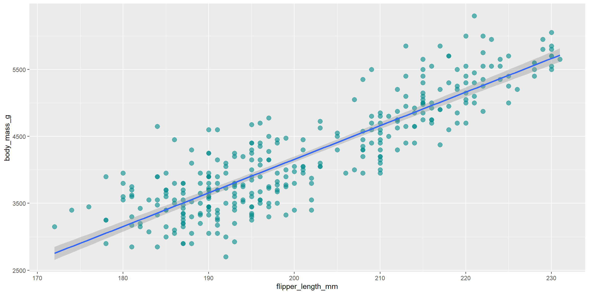
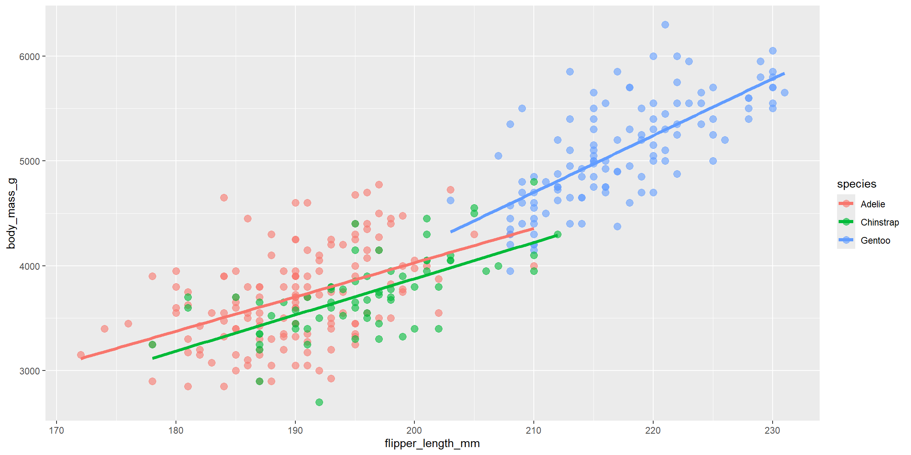
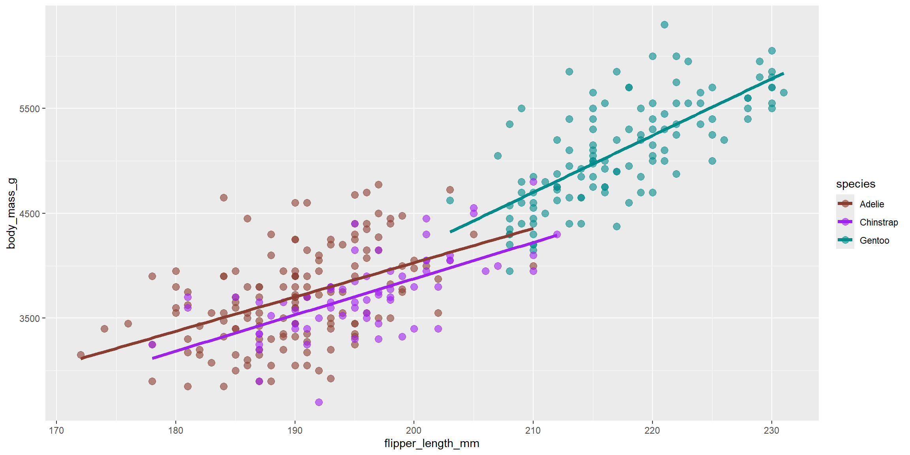
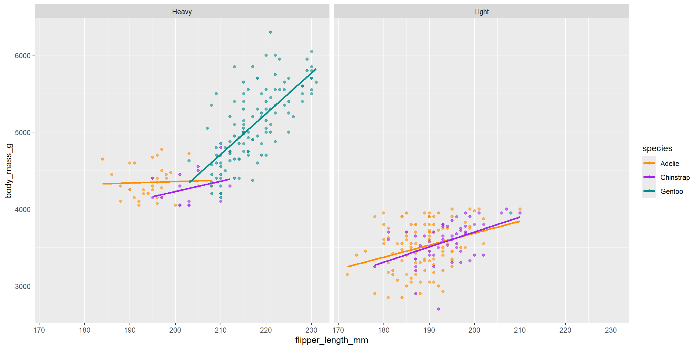
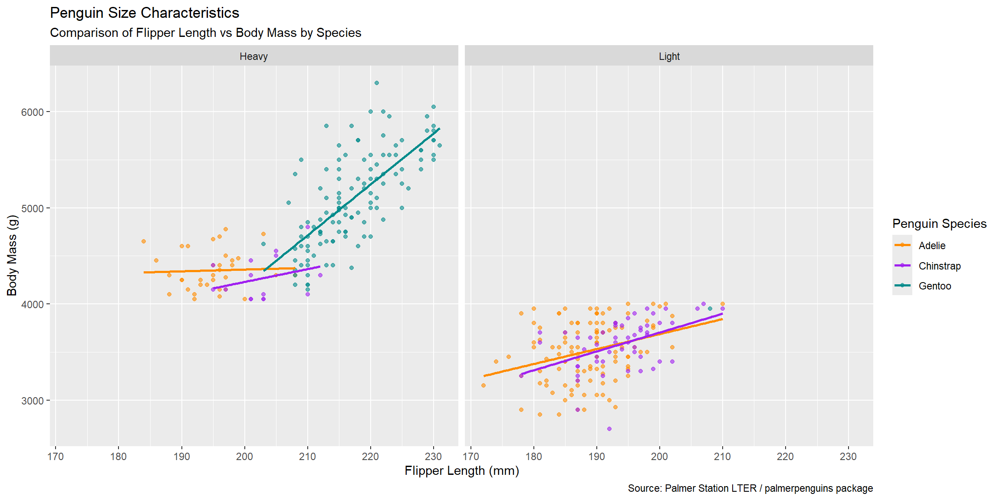
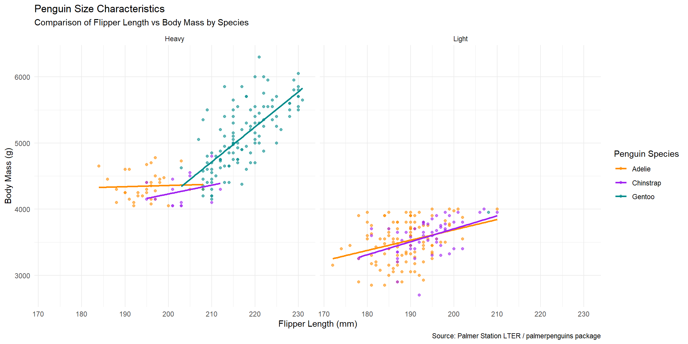
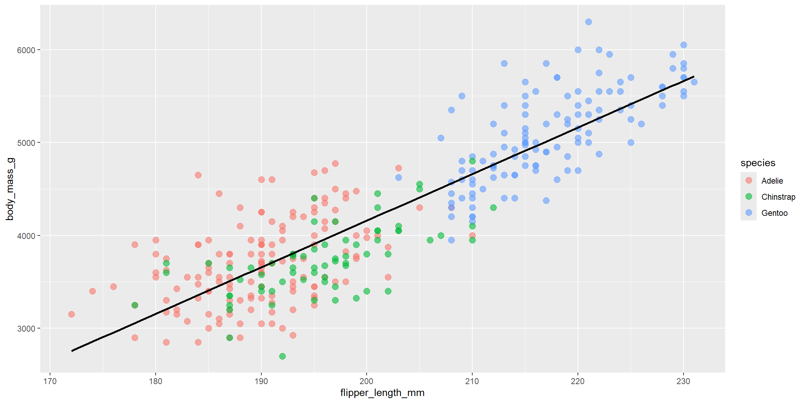
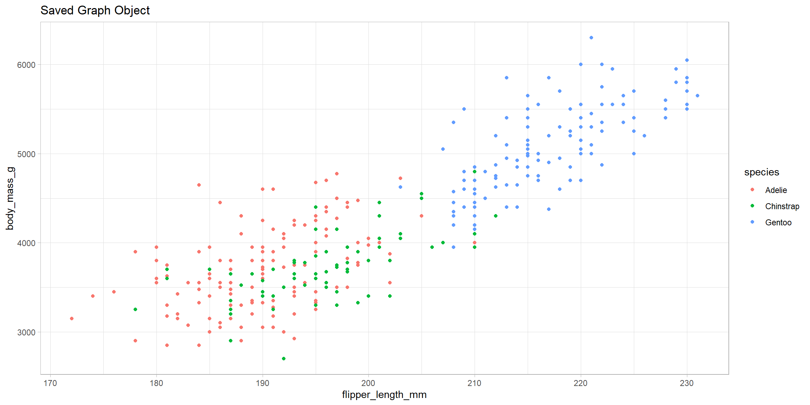

This section offers a primer on how the ggplot2 package operates. Unlike many other plotting systems, ggplot2 is based on the “Grammar of Graphics,” which allows you to build graphs layer by layer. We will construct a complex visualization starting from a blank canvas and adding elements—like data points, trend lines, and labels—one step at a time.
Let’s start with an example.
1. Getting the Data
The first step is always importing your data. For this page, we will use the Palmer Penguins dataset, which contains size measurements for three penguin species living on islands in the Palmer Archipelago, Antarctica.
Using head() allows you to peek at the first few rows. This is an important habit to develop, as seeing the raw structure of your dataframe helps you spot potential relationships between variables like flipper_length_mm and body_mass_g before you even start plotting.
Next, let’s create a new categorical variable to use later. We will classify penguins as “Heavy” or “Light” based on whether they weigh more than 4000 grams.
Code
```{r}# Create a weight category variablepenguins$weight_class <-ifelse(penguins$body_mass_g >4000, "Heavy", "Light")```
2. Building the Graph
To build a plot in ggplot2, you only strictly need the first two functions we will discuss. Every other function is an optional layer to enhance the visual.
The foundation is the ggplot() function. This initializes the graph by defining:
The Dataset to use.
The Mapping of variables to visual properties (aesthetics).
These mappings go inside the aes() function. Let’s prepare to look at the relationship between Flipper Length (x-axis) and Body Mass (y-axis).
Code
```{r}# Specify dataset and mappinglibrary(ggplot2) ggplot(data = penguins, mapping =aes(x = flipper_length_mm, y = body_mass_g))```
Why is the graph empty? We told R what data to use and where to put it (the axes), but we haven’t told it how to represent that data yet. We need a geometric object.
2.1 Geoms
“Geoms” (geometric objects) represent the actual marks on the plot: points, bars, lines, etc. We add these using functions starting with geom_. To create a scatterplot, we use geom_point().
In ggplot2, we chain these layers together using the + operator.
The plot above shows a strong positive correlation: as flipper length increases, body mass tends to increase.
We can customize the appearance of these geoms. Parameters like color, size, and alpha (transparency) can be set directly inside the geom function. Transparency is particularly useful when you have many points overlapping each other.
Code
```{r}# Make points blue, larger, and semi-transparentggplot(data = penguins, mapping =aes(x = flipper_length_mm, y = body_mass_g)) +geom_point(color ="darkcyan", alpha =0.6, size =3)```
2.2 Smoothers (Trend Lines)
To visualize the trend more clearly, we can add a smoothing layer using geom_smooth(). We can control the method (linear vs. curved), the color, and whether to show the confidence interval. Here, we’ll use a linear model (method = "lm").
Code
# Add a line of best fitggplot(data = penguins, mapping =aes(x = flipper_length_mm, y = body_mass_g)) +geom_point(color ="darkcyan", alpha =0.6, size =3) +geom_smooth(method ="lm")

2.3 Grouping with Aesthetics
While the plot above is informative, it treats all penguins as one homogeneous group. We know our dataset contains different Species.
We can map variables to visual characteristics like color or shape inside the aes() function. This allows us to superimpose groups on a single graph. Let’s map species to color.
Code
# Map species to colorggplot(data = penguins, mapping =aes(x = flipper_length_mm, y = body_mass_g, color = species)) +geom_point(alpha =0.6, size =3) +geom_smooth(method ="lm", se =FALSE, linewidth =1.5)

Notice the difference:
color = species is inside aes() because it maps data to a visual.
se = FALSE was added to geom_smooth to remove the shaded confidence intervals for a cleaner look.
We can now see that Gentoo penguins are generally larger than Adelie or Chinstrap penguins.
2.4 Scales
“Scales” control how the data values are translated into visual properties (like specific colors or axis ticks). Scale functions always start with scale_.
Let’s modify the X-axis breaks and manually define the colors for our species to be more distinct.
Code
# Customize axes and color paletteggplot(data = penguins, mapping =aes(x = flipper_length_mm, y = body_mass_g, color = species)) +geom_point(alpha =0.6, size =3) +geom_smooth(method ="lm", se =FALSE, size =1.5) +scale_x_continuous(breaks =seq(170, 230, 10)) +scale_y_continuous(breaks =seq(2500, 6500, 1000)) +scale_color_manual(values =c("coral4", "purple", "cyan4"))

2.5 Facets
Sometimes a plot becomes too cluttered with multiple groups. Faceting solves this by splitting the plot into sub-plots based on a categorical variable.
Let’s see if the relationship holds true across the different “Weight Classes” we defined earlier.
Code
# Split the plot by weight classggplot(data = penguins, mapping =aes(x = flipper_length_mm, y = body_mass_g, color = species)) +geom_point(alpha =0.6) +geom_smooth(method ="lm", se =FALSE) +scale_color_manual(values =c("darkorange", "purple", "cyan4")) +facet_wrap(~weight_class)

Faceting allows us to simultaneously view the data cut by different dimensions without overlapping points obscuring the view.
2.6 Labels
Good data visualization requires clear communication. The labs() function allows you to customize the title, subtitle, captions, and axis labels so the viewer doesn’t have to guess what “flipper_length_mm” means.
Code
```{r}# Add infomative labelsggplot(data = penguins, mapping =aes(x = flipper_length_mm, y = body_mass_g, color = species)) +geom_point(alpha =0.6) +geom_smooth(method ="lm", se =FALSE) +scale_color_manual(values =c("darkorange", "purple", "cyan4")) +facet_wrap(~weight_class) +labs(title ="Penguin Size Characteristics",subtitle ="Comparison of Flipper Length vs Body Mass by Species",caption ="Source: Palmer Station LTER / palmerpenguins package",x ="Flipper Length (mm)",y ="Body Mass (g)",color ="Penguin Species" )```
`geom_smooth()` using formula = 'y ~ x'

2.7 Themes
Finally, we can polish the overall look using Themes. Theme functions (starting with theme_) control non-data elements like background colors, fonts, and grid lines. theme_minimal() is a popular choice for a clean, modern look.
Code
# Apply a minimal themeggplot(data = penguins, mapping =aes(x = flipper_length_mm, y = body_mass_g, color = species)) +geom_point(alpha =0.6) +geom_smooth(method ="lm", se =FALSE) +scale_color_manual(values =c("darkorange", "purple", "cyan4")) +facet_wrap(~weight_class) +labs(title ="Penguin Size Characteristics",subtitle ="Comparison of Flipper Length vs Body Mass by Species",caption ="Source: Palmer Station LTER / palmerpenguins package",x ="Flipper Length (mm)",y ="Body Mass (g)",color ="Penguin Species" ) +theme_minimal()

Tip
You can manipulate the legend of your graph with the theme function. This can be added with + and is different from the theme_minimal() in the code above. For example if you want to adjust its’ position, use theme(legend.position = ) Options for legend.position: * "top", "bottom", "left", "right" * c(x, y) for exact placement (e.g., c(0.9, 0.2) for bottom-right inside plot) * "none" to remove the legend
3. Placing Mappings and Storing Objects
3.1 Global vs Local Mapping
In the previous examples, we defined our mapping aes(...) inside the main ggplot() function. This is a Global mapping, as in it applies to every layer (both points and lines).
However, you can also place mappings inside a specific Geom. This creates a Local mapping that applies only to that layer.
Observe the difference when we move color = species into the geom_point() function only:
Code
```{r}# Mapping color LOCALLY in geom_point onlyggplot(penguins, aes(x = flipper_length_mm, y = body_mass_g)) +geom_point(aes(color = species), alpha =0.6, size =3) +geom_smooth(method ="lm", se =FALSE, color ="black")```
`geom_smooth()` using formula = 'y ~ x'

Because the color mapping was only inside geom_point, the geom_smooth did not “know” about the species groups. Consequently, it drew a single black trend line for the entire dataset, rather than one line per species.
3.2 Graphs as Objects
In R, a graph is just an object. You can save it to a variable, modify it later, and print it when you want to. This is great for keeping your code clean or generating multiple versions of a plot programmatically.
Code
```{r}# 1. Create the base plot objectmy_plot <-ggplot(data = penguins, aes(x = flipper_length_mm, y = body_mass_g)) +geom_point(aes(color = species))# 2. Add a theme and labels to the objectfinal_plot <- my_plot +theme_light() +labs(title ="Saved Graph Object")# 3. Print the final resultfinal_plot```

Further Resources
To deepen your understanding of ggplot2, consider these resources:
---title: "Introduction to ggplot2: The Grammar of Graphics"format: html: fig-width: 12 fig-height: 6 code-fold: show code-tools: true code-block-bg: true code-block-border-left: "#31BAE9" toc: true code-copy: true number_sections: true echo: fenced---This section offers a primer on how the `ggplot2` package operates. Unlike many other plotting systems, `ggplot2` is based on the "Grammar of Graphics," which allows you to build graphs layer by layer. We will construct a complex visualization starting from a blank canvas and adding elements—like data points, trend lines, and labels—one step at a time.Let’s start with an example.# 1. Getting the DataThe first step is always importing your data. For this page, we will use the **Palmer Penguins** dataset, which contains size measurements for three penguin species living on islands in the Palmer Archipelago, Antarctica.```{r}#| echo: true #| message: false#| warning: falselibrary(ggplot2)library(palmerpenguins)penguins <- palmerpenguins::penguinspenguins <-na.omit(penguins)head(penguins)```Using `head()` allows you to peek at the first few rows. This is an important habit to develop, as seeing the raw structure of your dataframe helps you spot potential relationships between variables like `flipper_length_mm` and `body_mass_g` before you even start plotting.Next, let's create a new categorical variable to use later. We will classify penguins as "Heavy" or "Light" based on whether they weigh more than 4000 grams.```{r}# Create a weight category variablepenguins$weight_class <-ifelse(penguins$body_mass_g >4000, "Heavy", "Light")```# 2. Building the GraphTo build a plot in `ggplot2`, you only *strictly* need the first two functions we will discuss. Every other function is an optional layer to enhance the visual.The foundation is the `ggplot()` function. This initializes the graph by defining:1. The **Dataset** to use.2. The **Mapping** of variables to visual properties (aesthetics).These mappings go inside the `aes()` function. Let's prepare to look at the relationship between **Flipper Length** (x-axis) and **Body Mass** (y-axis).```{r}# Specify dataset and mappinglibrary(ggplot2) ggplot(data = penguins, mapping =aes(x = flipper_length_mm, y = body_mass_g))```**Why is the graph empty?** We told R *what* data to use and *where* to put it (the axes), but we haven't told it *how* to represent that data yet. We need a geometric object.## 2.1 Geoms"Geoms" (geometric objects) represent the actual marks on the plot: points, bars, lines, etc. We add these using functions starting with `geom_`. To create a scatterplot, we use `geom_point()`.In `ggplot2`, we chain these layers together using the `+` operator.```{r}# Add geometric pointsggplot(data = penguins, mapping =aes(x = flipper_length_mm, y = body_mass_g)) +geom_point()```The plot above shows a strong positive correlation: as flipper length increases, body mass tends to increase.We can customize the appearance of these geoms. Parameters like `color`, `size`, and `alpha` (transparency) can be set directly inside the geom function. Transparency is particularly useful when you have many points overlapping each other.```{r}# Make points blue, larger, and semi-transparentggplot(data = penguins, mapping =aes(x = flipper_length_mm, y = body_mass_g)) +geom_point(color ="darkcyan", alpha =0.6, size =3)```## 2.2 Smoothers (Trend Lines)To visualize the trend more clearly, we can add a smoothing layer using `geom_smooth()`. We can control the method (linear vs. curved), the color, and whether to show the confidence interval. Here, we'll use a linear model (`method = "lm"`).```{r}#| echo: true #| message: false#| warning: false# Add a line of best fitggplot(data = penguins, mapping =aes(x = flipper_length_mm, y = body_mass_g)) +geom_point(color ="darkcyan", alpha =0.6, size =3) +geom_smooth(method ="lm")```## 2.3 Grouping with AestheticsWhile the plot above is informative, it treats all penguins as one homogeneous group. We know our dataset contains different **Species**.We can map variables to visual characteristics like **color** or **shape** inside the `aes()` function. This allows us to superimpose groups on a single graph. Let's map `species` to color.```{r}#| echo: true #| message: false#| warning: false# Map species to colorggplot(data = penguins, mapping =aes(x = flipper_length_mm, y = body_mass_g, color = species)) +geom_point(alpha =0.6, size =3) +geom_smooth(method ="lm", se =FALSE, linewidth =1.5)```Notice the difference:1. `color = species` is inside `aes()` because it maps data to a visual.2. `se = FALSE` was added to `geom_smooth` to remove the shaded confidence intervals for a cleaner look.We can now see that Gentoo penguins are generally larger than Adelie or Chinstrap penguins.## 2.4 Scales"Scales" control how the data values are translated into visual properties (like specific colors or axis ticks). Scale functions always start with `scale_`.Let's modify the X-axis breaks and manually define the colors for our species to be more distinct.```{r}#| echo: true #| message: false#| warning: false# Customize axes and color paletteggplot(data = penguins, mapping =aes(x = flipper_length_mm, y = body_mass_g, color = species)) +geom_point(alpha =0.6, size =3) +geom_smooth(method ="lm", se =FALSE, size =1.5) +scale_x_continuous(breaks =seq(170, 230, 10)) +scale_y_continuous(breaks =seq(2500, 6500, 1000)) +scale_color_manual(values =c("coral4", "purple", "cyan4"))```## 2.5 FacetsSometimes a plot becomes too cluttered with multiple groups. **Faceting** solves this by splitting the plot into sub-plots based on a categorical variable.Let's see if the relationship holds true across the different "Weight Classes" we defined earlier.```{r}#| echo: true #| message: false#| warning: false# Split the plot by weight classggplot(data = penguins, mapping =aes(x = flipper_length_mm, y = body_mass_g, color = species)) +geom_point(alpha =0.6) +geom_smooth(method ="lm", se =FALSE) +scale_color_manual(values =c("darkorange", "purple", "cyan4")) +facet_wrap(~weight_class)```Faceting allows us to simultaneously view the data cut by different dimensions without overlapping points obscuring the view.## 2.6 LabelsGood data visualization requires clear communication. The `labs()` function allows you to customize the title, subtitle, captions, and axis labels so the viewer doesn't have to guess what "flipper_length_mm" means.```{r}# Add infomative labelsggplot(data = penguins, mapping =aes(x = flipper_length_mm, y = body_mass_g, color = species)) +geom_point(alpha =0.6) +geom_smooth(method ="lm", se =FALSE) +scale_color_manual(values =c("darkorange", "purple", "cyan4")) +facet_wrap(~weight_class) +labs(title ="Penguin Size Characteristics",subtitle ="Comparison of Flipper Length vs Body Mass by Species",caption ="Source: Palmer Station LTER / palmerpenguins package",x ="Flipper Length (mm)",y ="Body Mass (g)",color ="Penguin Species" )```## 2.7 ThemesFinally, we can polish the overall look using **Themes**. Theme functions (starting with `theme_`) control non-data elements like background colors, fonts, and grid lines. `theme_minimal()` is a popular choice for a clean, modern look.```{r}#| echo: true #| message: false#| warning: false# Apply a minimal themeggplot(data = penguins, mapping =aes(x = flipper_length_mm, y = body_mass_g, color = species)) +geom_point(alpha =0.6) +geom_smooth(method ="lm", se =FALSE) +scale_color_manual(values =c("darkorange", "purple", "cyan4")) +facet_wrap(~weight_class) +labs(title ="Penguin Size Characteristics",subtitle ="Comparison of Flipper Length vs Body Mass by Species",caption ="Source: Palmer Station LTER / palmerpenguins package",x ="Flipper Length (mm)",y ="Body Mass (g)",color ="Penguin Species" ) +theme_minimal()```:::{.callout-tip}You can manipulate the legend of your graph with the `theme` function. This can be added with `+` and is different from the `theme_minimal()` in the code above. For example if you want to adjust its' position, use `theme(legend.position = )`Options for `legend.position`: * `"top"`, `"bottom"`, `"left"`, `"right"`* `c(x, y)` for exact placement (e.g., `c(0.9, 0.2)` for bottom-right inside plot) * `"none"` to remove the legend:::# 3. Placing Mappings and Storing Objects## 3.1 Global vs Local MappingIn the previous examples, we defined our mapping `aes(...)` inside the main `ggplot()` function. This is a **Global** mapping, as in it applies to every layer (both points and lines).However, you can also place mappings inside a specific Geom. This creates a **Local** mapping that applies *only* to that layer.Observe the difference when we move `color = species` into the `geom_point()` function only:```{r}# Mapping color LOCALLY in geom_point onlyggplot(penguins, aes(x = flipper_length_mm, y = body_mass_g)) +geom_point(aes(color = species), alpha =0.6, size =3) +geom_smooth(method ="lm", se =FALSE, color ="black")```Because the color mapping was only inside `geom_point`, the `geom_smooth` did not "know" about the species groups. Consequently, it drew a single black trend line for the entire dataset, rather than one line per species.## 3.2 Graphs as ObjectsIn R, a graph is just an object. You can save it to a variable, modify it later, and print it when you want to. This is great for keeping your code clean or generating multiple versions of a plot programmatically.```{r}# 1. Create the base plot objectmy_plot <-ggplot(data = penguins, aes(x = flipper_length_mm, y = body_mass_g)) +geom_point(aes(color = species))# 2. Add a theme and labels to the objectfinal_plot <- my_plot +theme_light() +labs(title ="Saved Graph Object")# 3. Print the final resultfinal_plot```# Further ResourcesTo deepen your understanding of `ggplot2`, consider these resources:- [ggplot2 documentation](https://ggplot2.tidyverse.org)- [R for Data Science](https://r4ds.had.co.nz/) - In particular the Data Visualisation chapter- [The R Graph Gallery](https://r-graph-gallery.com/)